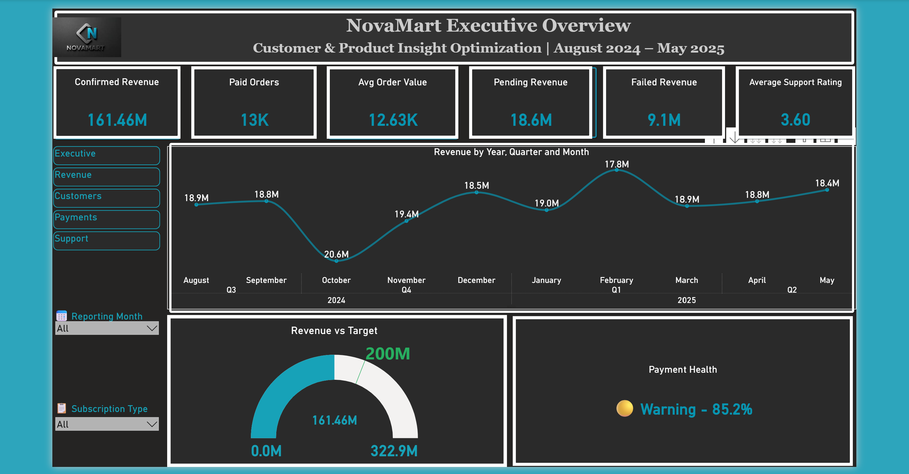
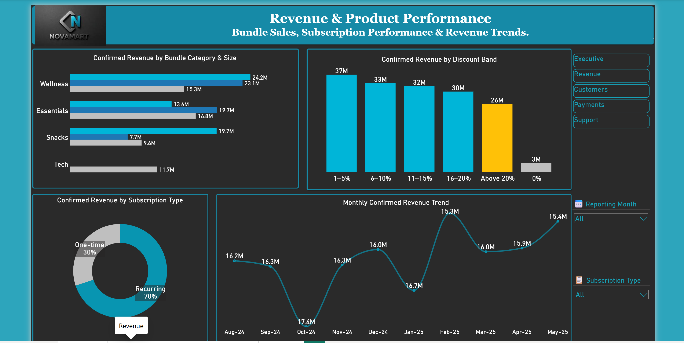
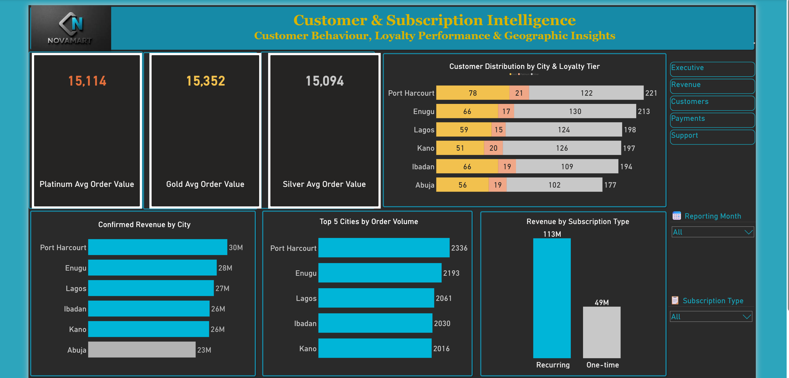
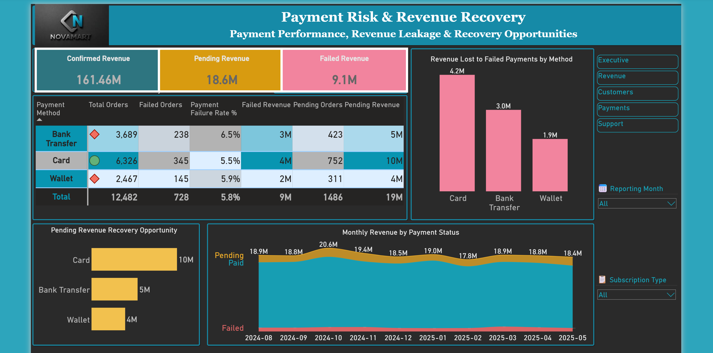
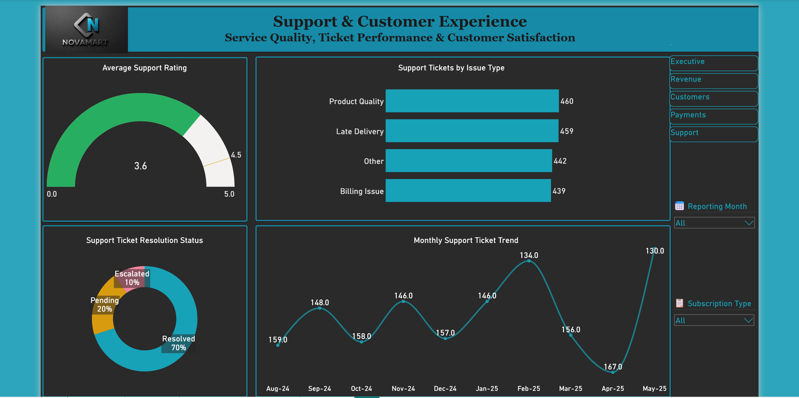
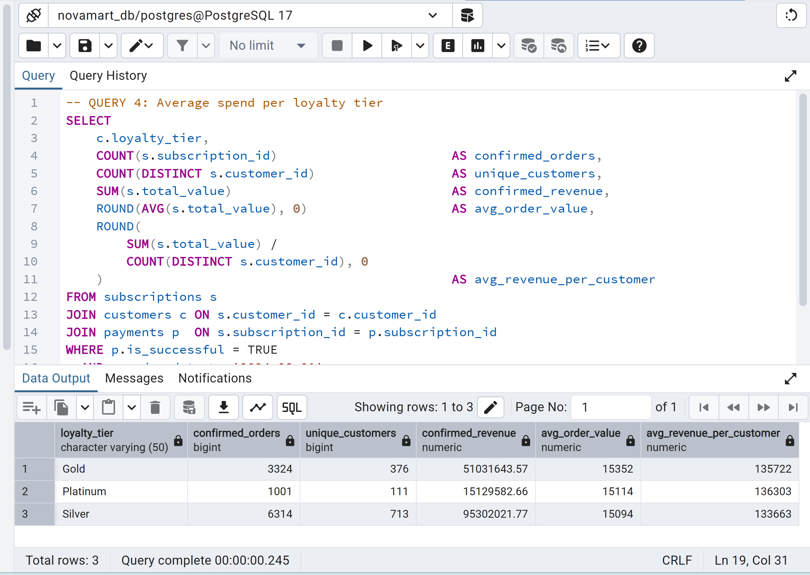
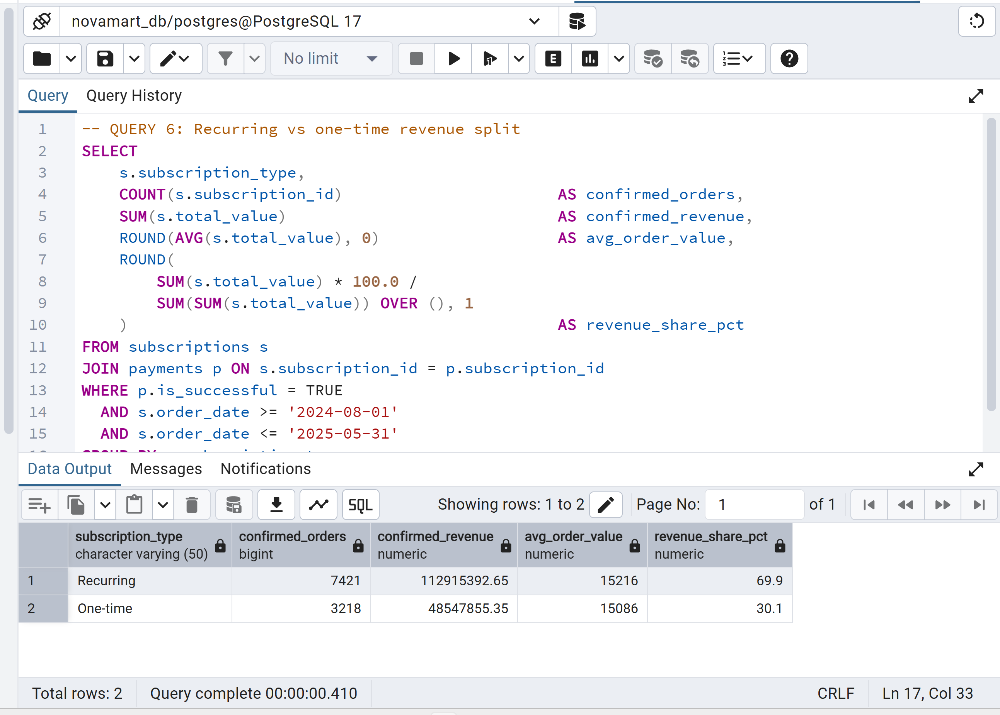
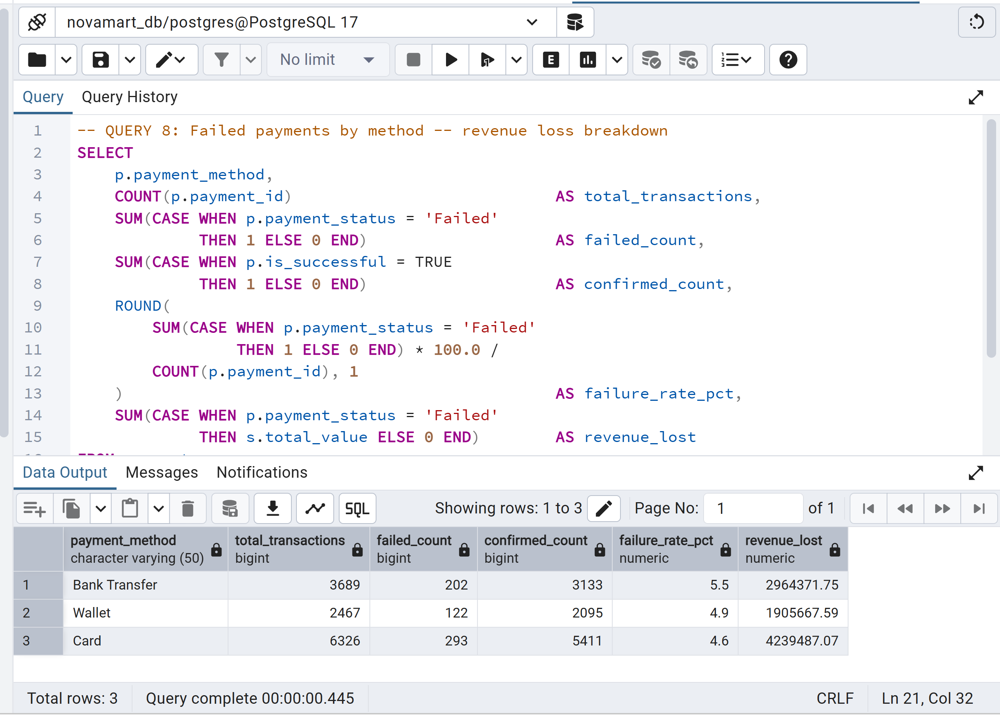

Executive Engagement Summary
Business Challenge
NovaMart lacked an integrated Business Intelligence framework capable of transforming operational data into executive decision-making. Despite tracking all transactions digitally, leadership had no structured way to monitor performance, identify risks, or prioritise growth opportunities.
My Role
Business Intelligence Consultant
Engagement Scope
- Data validation and quality assessment
- SQL analysis across six analytical themes
- KPI framework design
- Power BI dashboard development
- Strategic recommendations
Deliverables
- Executive BI Report
- SQL Insight Library (11 queries)
- DAX Measure Library
- Executive KPI Framework
- Five-page Power BI Dashboard
- Strategic Recommendations
- 90-Day Action Plan
- Opportunity and Risk Register
Business Domains
- Revenue Performance
- Products and Bundles
- Customers and Loyalty
- Payments and Risk
- Customer Support and Experience
Business Impact
Contents — Click to Navigate
Executive Summary
In this project, I analysed NovaMart's customer, subscription, payment, and support data to establish an executive KPI framework, identify growth opportunities, quantify operational risks, and develop strategic recommendations to support leadership decision-making.
Major Findings
NovaMart has already captured these orders. The barrier to collection is operational, not commercial — payment retry infrastructure can recover a significant portion immediately.
A product marked inactive in the catalogue generated N19.7M in confirmed paid revenue during the reporting period. This data integrity issue requires immediate resolution.
All three payment methods exceed the 2 to 3 percent digital commerce benchmark, resulting in N9.1M in lost revenue during the reporting period.
Average order value differs by less than N258 across Silver, Gold, and Platinum customers. The programme cannot identify or protect NovaMart's most valuable relationships.
No issue type achieves above 3.71 on a 5-point scale. Product Quality has both the lowest rating (3.55) and the highest escalation rate (10.2%).
Lowest volume, lowest revenue (N23.3M), lowest revenue share (14.5%). A N6.9M gap vs Port Harcourt requires a dedicated investigation before targeted investment.
Business Context
NovaMart is a digital-first Nigerian company offering curated lifestyle product bundles through a monthly subscription model. Customers subscribe to receive wellness kits, tech accessories, snacks, and home essentials. Orders are personalised based on user profiles and delivered across six major Nigerian cities: Lagos, Abuja, Port Harcourt, Enugu, Ibadan, and Kano.
NovaMart operates 100% online and tracks all transactions, feedback, and customer interactions digitally. Despite this infrastructure, leadership faced a challenge common to fast-growing subscription businesses. Large volumes of operational data existed across multiple systems, but no unified analytical framework had been established to monitor performance, identify risks, or support strategic decisions.
The organisation was growing but operating without clear visibility in key areas. Leadership could not easily answer questions about which products were most profitable, whether discounting was helping or hurting margins, which customer segments drove long-term value, or what was driving low satisfaction scores in customer support. This project was commissioned to close that gap.
Business Rationale
This project was undertaken to transform operational data into actionable business intelligence, establishing executive KPIs, uncovering performance drivers, and providing recommendations that support revenue growth, customer retention, and operational efficiency.
Product Intelligence
Identify top-performing bundles, underperforming products, and product anomalies requiring business attention, so that product investment decisions are grounded in confirmed commercial evidence rather than assumption.
Customer Intelligence
Understand customer behaviour across locations, loyalty tiers, and subscription patterns to identify retention risks and uncover opportunities to increase customer lifetime value.
Financial Intelligence
Monitor revenue performance, payment trends, and revenue leakage to improve financial outcomes and reduce the gap between orders placed and revenue collected.
Executive Enablement
Provide leadership with a structured KPI framework and interactive dashboards to support data-driven decision-making consistently across all business dimensions on an ongoing basis.
Project Overview
Engaged as the Business Intelligence Consultant supporting NovaMart's analytics function, I led the full data exploration, SQL analysis, KPI framework design, and dashboard build for this subscription commerce project. The work covered five analytical dimensions: revenue performance, product and bundle analysis, customer intelligence, payment risk, and customer support.
My responsibilities included validating the PostgreSQL database and documenting data quality conditions, developing the SQL Insight Library to answer 11 business questions across six analytical themes, designing and building the Power BI dashboard across five pages with a fully documented DAX measure library, and translating analytical findings into executive-ready strategic recommendations with measurable success criteria.
The project covered the full available dataset across August 2024 to May 2025, representing 10 complete months of NovaMart's subscription commerce operations.
Project Methodology
The following structured approach was applied throughout this project, ensuring that every analytical output was grounded in validated data and connected to a business decision.
Business Objectives
Objective 1
Bundle performance KPIsEstablish KPIs that distinguish top-performing bundles from underperformers and identify products requiring business decisions.
Objective 2
Retention and loyalty KPIsDesign a KPI framework that gives leadership clear signals on customer health, loyalty programme effectiveness, and support quality.
Objective 3
Executive monitoring dashboardBuild a dashboard that makes the most important performance indicators immediately visible without requiring manual data extraction.
Objective 4
Decision framework, not just a reportEnsure every analytical section drives toward a recommendation and an expected business outcome, so the work produces executive decisions.
Success Criteria
This project was considered successful upon delivery of the following outcomes.
- An executive KPI framework established and documented, covering revenue, product, customer, payment, and support dimensions.
- Confirmed revenue, pending revenue, and failed revenue quantified and clearly distinguished across all analyses.
- Revenue leakage sources identified and quantified with recovery estimates and measurable conversion targets.
- Product catalogue anomalies surfaced and explained with business implications and recommended actions.
- Seven strategic recommendations developed with priority, ownership, timeline, measurable success criteria, and expected impact.
- An interactive five-page Power BI dashboard designed and built with a fully documented DAX measure library.
- A 90-day implementation roadmap delivered, enabling leadership to act on findings immediately.
Assumptions and Limitations
Key Assumptions and Limitations
- Confirmed revenue uses is_successful = TRUE, matching the Power BI DAX logic exactly.
- Reporting period is August 2024 to May 2025 only — data outside this window is excluded.
- Cost data is unavailable — profitability and margin analysis are excluded from this report.
- Profit analysis is excluded — all revenue figures represent gross order value after discount.
- Dataset covers 10 months only — year-on-year comparisons are not possible from this dataset.
- Loyalty tier assignment criteria are unknown — assumed frequency or tenure-based, not spend-based.
- Bundle G status requires business clarification — the analytical finding surfaces the anomaly only.
- Dashboard figures (N161.46M) differ from full-dataset totals due to the reporting period filter.
Business Questions and Answers
All figures reflect the August 2024 to May 2025 reporting period with confirmed payments only (is_successful = TRUE), matching the Power BI DAX filter logic exactly.
SQL Exploration Questions
Q1: Which 3 bundles have the highest subscription volume?
| Rank | Bundle | Category | Size | Active | Orders |
|---|---|---|---|---|---|
| 1 | Bundle J | Wellness | Large | Yes | 1,591 |
| 2 | Bundle I | Wellness | Medium | Yes | 1,515 |
| 3 | Bundle H | Essentials | Medium | Yes | 1,328 |
Q2: Average spend per loyalty tier (confirmed orders only)
| Loyalty Tier | Avg Order Value | Confirmed Revenue | Paid Orders |
|---|---|---|---|
| Platinum | N15,114 | N15,129,583 | 1,001 |
| Gold | N15,352 | N51,031,644 | 3,324 |
| Silver | N15,094 | N95,302,022 | 6,314 |
Q3: Failed payments by method
| Method | Failed Count | Failure Rate | Revenue Lost |
|---|---|---|---|
| Bank Transfer | 202 | 5.5% | N2,964,372 |
| Wallet | 122 | 4.9% | N1,905,668 |
| Card | 293 | 4.6% | N4,239,487 |
| Total | 617 | 4.9% avg | N9,109,527 |
Q4: Total revenue by active bundle category
| Category | Paid Orders | Confirmed Revenue | Revenue Share | Avg Order Value |
|---|---|---|---|---|
| Wellness | 4,141 | N62,589,140 | 44.1% | N15,116 |
| Essentials | 3,309 | N50,171,928 | 35.4% | N15,163 |
| Snacks (active only) | 1,149 | N17,360,363 | 12.2% | N15,109 |
| Tech | 757 | N11,691,010 | 8.2% | N15,444 |
Q5: Issue types with lowest ratings
| Issue Type | Tickets | Avg Rating | Escalation Rate |
|---|---|---|---|
| Other | 442 | 3.54 | 9.0% |
| Product Quality | 460 | 3.55 | 10.2% |
| Billing Issue | 439 | 3.61 | 9.8% |
| Late Delivery | 459 | 3.71 | 9.6% |
Power BI Dashboard Questions
PBI Q1: Revenue by category and size
Wellness (Large) is the dominant combination. Displayed as a clustered bar chart with category on the axis, filterable by bundle size.
PBI Q2: Monthly trend
Revenue N15.3M to N17.4M per month. October 2024 peaked at N17.4M. Displayed as a line chart across the full reporting period.
PBI Q3: Loyalty by city and spend
Port Harcourt leads all cities across all loyalty tiers. Abuja has the lowest total. Displayed as a stacked bar by city segmented by loyalty tier.
PBI Q4: Top 5 cities by volume
Port Harcourt 1,977 | Enugu 1,847 | Lagos 1,806 | Ibadan 1,735 | Kano 1,697. Abuja (1,577) does not appear in the top 5.
PBI Q5: Ticket rating vs resolution
Product Quality lowest at 3.55 with 10.2% escalation rate. Resolution status: 70% Resolved, 20% Pending, 10% Escalated.
Data Quality and Assumptions
Executive KPI Dashboard Summary
The Power BI dashboard is structured across five pages, each carrying two persistent filters: is_successful = TRUE and the reporting period August 2024 through May 2025.





Executive Impact Snapshot
| Area | Finding | Business Impact |
|---|---|---|
| Revenue | N18.6M in pending payments | Recovery opportunity through payment retry infrastructure |
| Payments | 4.9% average failure rate | N9.1M revenue leakage exceeding industry benchmark |
| Product | Bundle G inactive anomaly | N19.7M generated by a product that officially does not exist |
| Loyalty | N258 spend gap across all tiers | Loyalty programme cannot identify or protect high-value customers |
| Support | Product Quality 3.55 avg rating | Highest escalation rate (10.2%), direct retention risk |
| Geography | Abuja trails all cities | N6.9M gap vs Port Harcourt, lowest revenue share at 14.5% |
| Recurring | One-time revenue at 30% | Revenue base is volatile and must be re-earned every month |
Revenue Performance
What I Analysed
I analysed confirmed revenue across all paid transactions between August 2024 and May 2025 to identify NovaMart's revenue baseline, diagnose growth patterns, and quantify revenue risk from payment outcomes and subscription type distribution.
What I Found
Monthly Revenue Trend
| Month | Confirmed Orders | Confirmed Revenue |
|---|---|---|
| August 2024 | 1,082 | N16,174,224 |
| September 2024 | 1,087 | N16,277,553 |
| October 2024 | 1,125 | N17,396,931 (peak) |
| November 2024 | 1,060 | N16,251,752 |
| December 2024 | 1,071 | N15,965,088 |
| January 2025 | 1,093 | N16,725,205 |
| February 2025 | 988 | N15,289,210 (low) |
| March 2025 | 1,059 | N16,005,560 |
| April 2025 | 1,049 | N15,939,098 |
| May 2025 | 1,025 | N15,438,626 |
Business Insight
NovaMart's revenue has reached a steady state. Monthly confirmed revenue moves narrowly between N15.3M and N17.4M with no sustained growth trajectory. October 2024 was the single strongest month and no subsequent month matched it. This is not a declining business. It is a business that has plateaued, and that plateau will persist without a deliberate intervention.
The 30% one-time purchase contribution represents the most important structural risk in this revenue profile. One-time buyers have demonstrated willingness to purchase but have not committed to the recurring model. This revenue must be re-earned every month, unlike recurring subscription revenue which renews automatically.
My Recommendation
I recommend NovaMart implement two immediate revenue interventions. The first is a payment retry infrastructure targeting the 1,226 pending orders, prioritising the N9.6M sitting in card-pending status. The second is a post-purchase conversion campaign targeting one-time buyers with a first-month recurring discount, with the objective of reducing the one-time revenue share from 30% to below 25% within two quarters.
Product and Bundle Performance
What I Analysed
I analysed subscription volume, confirmed revenue, and payment outcomes by bundle, category, and size to identify NovaMart's top-performing products, underperformers, and product management issues requiring executive attention.
What I Found
Revenue by Active Bundle Category
| Category | Paid Orders | Confirmed Revenue | Revenue Share | Avg Order Value |
|---|---|---|---|---|
| Wellness | 4,141 | N62,589,140 | 44.1% | N15,116 |
| Essentials | 3,309 | N50,171,928 | 35.4% | N15,163 |
| Snacks (active only) | 1,149 | N17,360,363 | 12.2% | N15,109 |
| Tech | 757 | N11,691,010 | 8.2% | N15,444 (highest avg) |
Discount Impact
| Discount Band | Paid Orders | Avg Order Value | Total Revenue |
|---|---|---|---|
| No Discount | 208 | N16,659 | N3,465,049 |
| 1% to 10% | 4,284 | N16,317 | N69,901,159 |
| 11% to 20% | 4,268 | N14,641 | N62,486,829 |
| Above 20% | 1,879 | N13,630 (lowest) | N25,610,211 |
My Recommendation
I recommend NovaMart conduct an immediate product catalogue audit to resolve Bundle G's status. If deactivation was unintentional, restore the product and manage it as an active bundle. If intentional, close the ordering pathway immediately and implement a transition plan for affected customers. On discounting, a structured comparison of conversion rates at different discount levels would provide the data needed to set an evidence-based ceiling.
Customer Intelligence
What I Analysed
I analysed customer behaviour across loyalty tiers, cities, and subscription types to identify retention risks, uncover opportunities to increase customer lifetime value, and surface geographic performance gaps requiring strategic attention.
What I Found
Loyalty Tier Analysis
Revenue by City
| City | Confirmed Orders | Confirmed Revenue | Revenue Share |
|---|---|---|---|
| Port Harcourt | 1,977 | N30,229,346 | 18.7% |
| Enugu | 1,847 | N27,931,945 | 17.3% |
| Lagos | 1,806 | N27,301,612 | 16.9% |
| Ibadan | 1,735 | N26,378,319 | 16.3% |
| Kano | 1,697 | N26,272,209 | 16.3% |
| Abuja | 1,577 | N23,349,818 | 14.5% |
Business Insight
The loyalty tier finding is one of the most strategically significant discoveries in this project. Average order value across all three tiers differs by less than N258. The programme is classifying customers without differentiating them in any commercially meaningful way. NovaMart cannot currently use its loyalty tiers to identify, reward, or protect the customers who are genuinely most valuable to the business.
Abuja trails Port Harcourt by N6.9M in confirmed revenue and 400 paid orders. It has the lowest revenue share at 14.5% and the lowest order volume of all six cities. Without a deliberate strategy, this gap will persist as other markets grow.
My Recommendation
I recommend NovaMart redesign its loyalty tier criteria to incorporate spend-based thresholds: Silver below N100K annual confirmed spend, Gold between N100K and N200K, and Platinum above N200K. For Abuja, I recommend a structured market investigation before committing to targeted investment.
Payment Risk
What I Analysed
I analysed payment outcomes across all 12,482 transactions in the reporting period to identify failure rates by method, quantify revenue lost to failed payments, and assess the recovery opportunity represented by pending payments.
What I Found
Payment Method Performance
| Method | Total Transactions | Failed | Failure Rate | Revenue Lost |
|---|---|---|---|---|
| Bank Transfer | 3,689 | 202 | 5.5% | N2,964,372 |
| Wallet | 2,467 | 122 | 4.9% | N1,905,668 |
| Card | 6,326 | 293 | 4.6% | N4,239,487 |
| Total | 12,482 | 617 | 4.9% avg | N9,109,527 |
Pending Payment Recovery Opportunity
| Method | Pending Count | Recoverable Revenue |
|---|---|---|
| Card | 622 | N9,604,767 |
| Bank Transfer | 354 | N5,178,594 |
| Wallet | 250 | N3,781,334 |
| Total | 1,226 | N18,564,695 |
My Recommendation
I recommend NovaMart engage its payment processor to review transaction failure logs for Bank Transfer specifically. For pending payments, I recommend implementing an automated retry sequence at 24-hour, 48-hour, and 72-hour intervals immediately. This is the highest-impact, lowest-cost revenue intervention in this project, requiring no new customer acquisition.
Customer Support and Experience
What I Analysed
I analysed 1,800 support tickets covering issue type, resolution status, and customer satisfaction rating to identify which complaint categories generate the worst customer experience and create the greatest retention risk.
What I Found
| Issue Type | Tickets | Avg Rating | Escalated | Escalation Rate | Resolved | Pending |
|---|---|---|---|---|---|---|
| Other | 442 | 3.54 | 40 | 9.0% | 264 | 138 |
| Product Quality | 460 | 3.55 | 47 | 10.2% | 272 | 141 |
| Billing Issue | 439 | 3.61 | 43 | 9.8% | 266 | 130 |
| Late Delivery | 459 | 3.71 | 44 | 9.6% | 279 | 136 |
Business Insight
The most important finding in this section is not which issue type rates lowest. It is that no issue type rates above 3.71 on a 5-point scale. NovaMart's customer support function is not generating satisfaction anywhere in its operation. The problem is systemic, not categorical, and it represents a direct retention risk that compounds over time.
Product Quality issues are the priority target. They carry the lowest satisfaction rating (3.55), the highest escalation rate (10.2%), and the second highest ticket volume (460). The near 10% escalation rate across all types is double the expected benchmark of 3 to 5 percent for a well-functioning support operation.
My Recommendation
I recommend NovaMart address Product Quality issues at the source through supplier quality checks and bundle curation standards. A frontline support capability review is needed to identify which ticket types could be resolved at first contact with better tooling or decision authority. A satisfaction target of 4.0 or above across all issue types should be set as a 90-day objective with monthly tracking through the Power BI dashboard.
Executive KPI Framework
I designed the following KPI framework to enable leadership to monitor performance consistently across revenue, customer, payment, product, and support operations.
Revenue KPIs: Monitor Monthly
| KPI | Current | Target | Alert Level |
|---|---|---|---|
| Monthly confirmed revenue | N15.3M to N17.4M | N18M or above | Below N15M |
| Pending revenue rate | 11.5% | Below 7% | Above 12% |
| Payment failure rate | 4.9% | Below 3% | Above 5% |
| Recurring revenue share | 70% | 75% or above | Below 65% |
Product KPIs: Monitor Monthly
| KPI | Current | Target | Alert Level |
|---|---|---|---|
| Top category revenue share | Wellness and Essentials = 79.5% | Maintain | Tech share below 7% |
| Deep discount order share | 15.1% | Below 12% | Above 18% |
| Inactive bundle order count | Bundle G anomaly active | Zero | Any count above zero |
Customer KPIs: Monitor Monthly
| KPI | Current | Target | Alert Level |
|---|---|---|---|
| One-time to recurring conversion | Baseline TBD | Plus 5% per quarter | Flat trend |
| Abuja revenue share | 14.5% | 16% or above | Below 13% |
| Avg revenue per customer | N134,553 | Grow QoQ | Decline |
Support KPIs: Monitor Weekly
| KPI | Current | Target | Alert Level |
|---|---|---|---|
| Average ticket rating | 3.54 to 3.71 | 4.0 or above | Below 3.5 |
| Escalation rate | 10% | Below 5% | Above 12% |
| Product Quality avg rating | 3.55 | 4.0 or above | Below 3.4 |
Strategic Recommendations
Why it matters: N18.6M in pending payments represents revenue NovaMart has already earned at the order stage. Without a retry mechanism, this revenue ages and becomes increasingly unrecoverable.
Expected benefit: Recovering 40% of pending payments generates approximately N7.4M in near-term cash inflow. Reducing failure rates from 4.9% to below 3% prevents N3M to N4M in annual revenue loss.
Why it matters: A product marked inactive is receiving active orders and generating confirmed revenue. This is a data integrity issue and a customer trust risk.
Expected benefit: Resolves a product management gap, enables deliberate product decision-making, and protects customer trust for all affected customers.
Why it matters: All three payment methods exceed the 2 to 3 percent industry benchmark. Bank Transfer's 5.5% rate suggests a processor-level issue costing NovaMart revenue every month.
Expected benefit: Reducing failure rates to benchmark levels recovers N3M to N4M annually at current transaction volumes.
Why it matters: 30% of confirmed revenue (N48.5M) comes from one-time purchases. This revenue is volatile and must be re-earned every month.
Expected benefit: Converting 10% of current one-time buyers adds approximately N4.9M in annualised recurring revenue and reduces monthly volatility.
Why it matters: Product Quality has the lowest satisfaction rating (3.55) and the highest escalation rate (10.2%). No issue type achieves above 3.71. This is a systemic retention risk.
Expected benefit: Improving average ticket ratings to 4.0 or above reduces churn among dissatisfied customers and decreases escalation handling cost.
Why it matters: Average order value is near-identical across all tiers. The programme cannot identify or protect NovaMart's most valuable customer relationships.
Expected benefit: Spend-based tier criteria enable targeted rewards for genuinely high-value customers and improve Platinum retention.
Why it matters: Abuja is NovaMart's weakest market on every metric. Without a deliberate strategy, this gap will persist and widen as other cities grow.
Expected benefit: Closing 50% of the Abuja revenue gap relative to Kano adds approximately N3M in annual revenue.
Executive Action Plan: 30 to 90 Days
Recommendation Summary
| Priority | Recommendation | Owner | Timeline | Success Metrics |
|---|---|---|---|---|
| High, Immediate | Resolve Bundle G anomaly | Product Manager | 7 days | Inactive orders = zero |
| High | Implement payment retry infrastructure | Finance and Operations | 30 days | Pending below 7%, recovery above 40% |
| High | Reduce payment failure rates | Operations | 60 days | Failure rate below 3% |
| High | Convert one-time to recurring | Marketing | 60 days | Recurring share above 75% |
| Medium | Improve Product Quality and support | Customer Success | 60 days | Avg rating above 4.0 |
| Medium | Redesign loyalty programme | Marketing | 90 days | Spend-based tiers implemented |
| Medium | Develop Abuja market strategy | Marketing and Ops | 90 days | Abuja share above 16% |
Key Findings Summary
NovaMart has already captured the orders. The barrier to collection is operational, not commercial. A payment retry process can recover a significant portion immediately without acquiring a single new customer.
This is the most urgent data integrity issue in the dataset. A product listed as discontinued was actively ordered and paid for throughout the reporting period, creating both a catalogue risk and a customer trust exposure.
At an average of 4.9%, NovaMart lost N9.1M in revenue to failed payments during the 10-month reporting period, equivalent to approximately N11M annually at current volumes.
Average order value differs by less than N258 across Silver, Gold, and Platinum tiers. The programme classifies customers without differentiating them commercially, making it impossible to use as a targeted retention tool.
Lowest volume, lowest revenue, and lowest revenue share at 14.5%. A N6.9M gap vs Port Harcourt requires a specific investigation and deliberate strategy.
Product Quality has the lowest rating (3.55) and the highest escalation rate (10.2%). Escalation rates of approximately 10% are double the expected benchmark. This is a measurable and ongoing retention risk.
Business Value Delivered
Conclusion
This project set out to answer one question: what should NovaMart's executive team do next?
The data told a clear story. NovaMart is a stable subscription business with strong product demand in Wellness and Essentials, a committed recurring subscriber base generating 70% of confirmed revenue, and operational data rich enough to support serious strategic decisions. The business is not in crisis. It is, however, leaving significant value on the table in four specific areas: pending payment recovery, one-time buyer conversion, product catalogue management, and customer support quality.
The seven recommendations in this report are grounded in evidence from the data, assigned to specific owners, and sequenced into a 90-day plan that prioritises recoverable revenue and risk mitigation before growth initiatives. Implementing all seven within the 90-day roadmap is estimated to recover or generate approximately N22M to N28M in business value without acquiring a single new customer.
The Power BI dashboard ensures that the KPIs driving these decisions remain visible to leadership on a weekly and monthly basis. This project demonstrates how Business Intelligence extends beyond reporting. By combining structured SQL analysis, executive KPI design, interactive dashboards, and strategic recommendations, operational data becomes a practical decision-support framework that enables leaders to act with greater confidence, manage risk proactively, and prioritise growth opportunities.
Appendix
Appendix A: KPI Definitions
| KPI | Formula | Data Source |
|---|---|---|
| Confirmed Revenue | SUM(total_value) WHERE is_successful = TRUE, Aug 2024 to May 2025 | subscriptions and payments |
| Pending Revenue | SUM(total_value) WHERE payment_status = Pending | subscriptions and payments |
| Failed Revenue | SUM(total_value) WHERE payment_status = Failed | subscriptions and payments |
| Average Order Value | Confirmed Revenue divided by Confirmed Orders | subscriptions and payments |
| Payment Failure Rate | Failed Count divided by Total Transactions | payments |
| Recurring Revenue Share | Recurring Revenue divided by Confirmed Revenue | subscriptions and payments |
| Escalation Rate | Escalated Count divided by Total Tickets | support_tickets |
| Average Ticket Rating | AVG(rating) | support_tickets |
Appendix B: Data Model Relationships
| Relationship | Join Key | Type |
|---|---|---|
| customers to subscriptions | customer_id | One-to-many |
| bundles to subscriptions | bundle_id | One-to-many |
| subscriptions to payments | subscription_id | One-to-one |
| customers to support_tickets | customer_id | One-to-many |
Appendix C: DAX Measures Library
All measures use is_successful = TRUE for confirmed revenue, matching the SQL library filter logic exactly.
Appendix D: SQL Methodology
The SQL Insight Library covers 11 business questions across six analytical themes. All queries apply three consistent conditions: is_successful = TRUE, the August 2024 to May 2025 reporting window, and Bundle G separation from active-bundle totals. These match the Power BI DAX filter logic exactly, ensuring all SQL outputs reconcile with dashboard figures. A reconciliation verification query is included to confirm that all three headline figures match the dashboard before any query result is presented to stakeholders.
Appendix F: SQL Query Screenshots
All 11 analytical queries plus the reconciliation verification query were executed in PostgreSQL (pgAdmin 4) against the novamart_db database. Screenshots confirm actual query execution and results. All figures reconcile with the Power BI dashboard within rounding.









Appendix G: References
The payment failure rate benchmark of 2 to 3 percent is an industry standard for digital commerce payment processing, widely cited across payment gateway providers including Stripe and Adyen in their published documentation on payment optimisation. All other figures, totals, and percentages in this report are derived directly from the NovaMart dataset for the August 2024 to May 2025 reporting period. No external financial projections have been used beyond this benchmark.